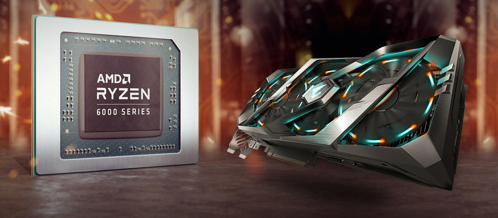

The Central Processing Unit (CPU) is responsible for executing instructions and performing calculations. It manages tasks and coordinates other hardware components.
The Graphics Processing Unit (GPU) specializes in rendering images and handling parallel tasks. It is especially important for gaming, video editing, and machine learning applications.

Source: Intel